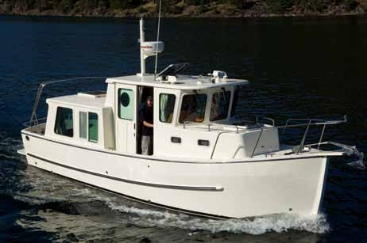

B-Scout Boat Guide · NPAC-28
North Pacific 28 Pilothouse Pilothouse
2009–2012
The North Pacific 28 Pilothouse is a China-built cruising trawler developed around practical owner operation, low-maintenance exterior surfaces and warm wood interiors. The 28 is a compact pilothouse design aimed at trailerable-style cruising, while the 38 Sedan is a substantially larger Europa-style long-range coastal cruiser.

- Length
- 31 ft
- Beam
- 8.5 ft
- Draft
- 2.42 ft
- Hull behaviour
- Semi-Displacement
- Fuel
- Diesel
- Propulsion
- Shaft
- Engine configuration
- Single 130 hp Cummins QSD diesel
- Boat family
- Trawler
- Construction
- Fiberglass
Best for
- Couples wanting practical pilothouse or sedan cruising
- Owners prioritizing economy, systems access and low exterior maintenance
- Protected-water and coastal cruisers who value single-diesel simplicity
Trade-offs
- Limited production makes brokerage availability uneven
- Single-engine propulsion provides no second-engine redundancy
- The 38 requires conventional yacht-scale marina and haul-out infrastructure
Known concerns
- No model-specific concern has been promoted to B-Scout’s evidence threshold. This does not mean the model has no age-, condition- or hull-specific risks.
Inspection focus
- Verify exact hull year and factory equipment list
- Inspect windows, deck hardware and cored structures for leakage
- Inspect single-diesel cooling, exhaust, shaft, rudder and fuel systems
- Review thruster, inverter/charger, heating and electrical installations
- Confirm tank capacities and weight from hull-specific documentation
Continue researching
Related boat models
North Pacific 38 Sedan Europa Sedan
41.5 ft · Semi-Displacement
Camano 28/31 Gnome
31 ft · Semi-Displacement
Cutwater C-26 Cruiser
30.33 ft · Semi-Displacement
Cape Dory 30 PowerYacht Flybridge
30.25 ft · Planing / Modified-V
Cheoy Lee 32 Trawler Trawler
31.92 ft · Semi-Displacement
Grand Banks 32 Sedan
31.92 ft · Semi-Displacement
About this record
B-Scout preserves uncertainty: missing information remains unknown rather than being treated as a negative. Specifications and guidance describe the model record; individual boats can differ by year, equipment, refit and condition.